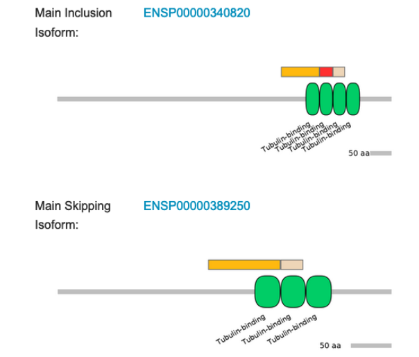

How alternative splicing can influence the encoded protein
In the final section we want to identify some examples for LSVs with an impact on the resulting protein or expression levels.
We can look at the top 20 LSVs regulated in both data sets that we identified in the “Comparison of data sets” part and search for some targets with an interesting effect.
Are genes with differntial splicing also differntially expressed?
First, have a look at your alternative gene expression analysis. Which of the genes from the 20 LSVs are also regulated alternatively? Are there any? Which type of splicing is happening inthese genes?
Is some functional evidence for these splicing events already known?
For some alternative splicing events functional evidence is provided in VastDB[https://vastdb.crg.eu/wiki/Main_Page]. Go on the VastDB webpage. You can enter your top 20 genes in the upper right corner and afterwards click on the gene identifier. This leads you to a new page where you can find alternative splicing events in the section called “EVENTS AND AS PROFILES”.
Check the coordinated of the lsv_id or the junction_coord columns to find your regulated exon. The click on the event, which leads us to a new page that provides additional information about our LSV.
In the section “Protein Impact” we can see were in the protein the splicing takes palce and if this affects known protein domains or disrupts the ORF. In addition, for some cassette exons in the section “Functional annotations” publications are listed in which the impact of the LSV was analyzed.
You can also scroll down to “SPECIAL DATASETS” and select the The Cancer Genome Atlas (TCGA). Is there a cancer type, where the PSI of the junction is very different in healty vs tumor samples?
Your task is now to identify two interesting events for which vastDB provides functional annotations (available publications).
In the following you can find two interesting events from older analyses from an HNRNPH1 knockdown.
MAPT
The first one is a cassette exon of MAPT (microtubule associated protein tau), which had a deltaPSI of 0.07378649 (7% more incusion in the HNRNPH1 knockdown).
A look on the vastDB entry of the event shows in the “Protein Impact” section that the inclusion of the exon produces an alternative protein isoforms that carries four instead of three microtubule-binding domains.
A closer look on the provided publications reveals that the ratio of isoforms containing and lacking the cassette exon is associated to the pathogenesis of several neurodegenerative disorders. This in turn also reveals that HNRNPH1 might be an interesting clinical target as it either directly or indirectly (we do not know this) regulates the inclusion of the cassette exon As the deltaPSI is increasing in the knockdown it likely functions as a repressor.
SAT1
The second example is a cassette exon of SAT1 (spermidine/spermine N1-acetyltransferase 1), which had a deltaPSI of 0.06929477 (~7% more inclusion in the HNRNPH1 knockdown).
A closer look on the vastDB entry for this event shows in the “Protein Impact” section that the inclusion of the exon disrupts the ORF, meaning that the inclusion isoform is not encoding for a functional protein.
knitr::include_graphics("/Users/melinaklostermann/Documents/projects/students/majiq-course/spezi_scripts_website/example_data/SAT1-1.png")When further checking the “Functional annotations” section, we can see that the isoform including the cassette exon is called SSATX and is proposed to function as a long non-coding RNA that likely acts as a tumor suppressor (first publication). In addition we can see that that the exon was identified as a poison cassette exon (second publication), which might explain the downregulation I obsered for the SAT1 gene that co-occured with the increased inclusion of the exon. The latter information indicates that HNRNPH1 might regulate the inclusion of this poison exon (as a repressor as the deltaPSI is positive in the knockdown) and therefore regulates SAT1 expression levels.
knitr::include_graphics("/Users/melinaklostermann/Documents/projects/students/majiq-course/spezi_scripts_website/example_data/SAT1-2.png")